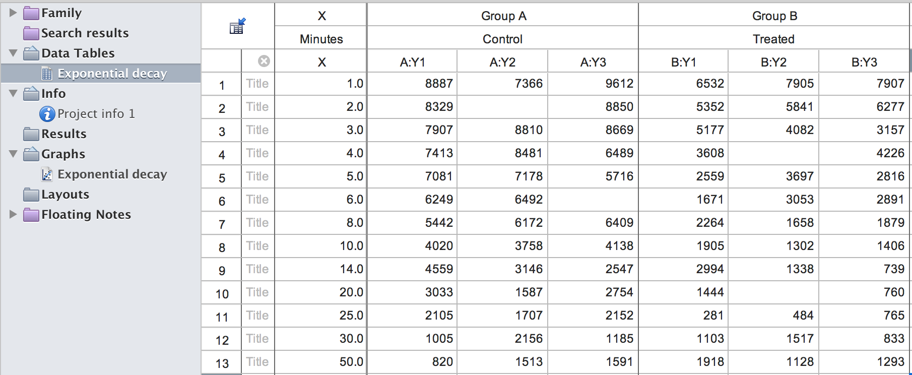

Main functionality
Reading
There are two main functions for reading. pzfx_tables lists the tables in a .pzfx file. read_pzfx reads one table into R from a .pzfx file.
We use a Prism example file exponential_decay.pzfx to show how these two functions work. Here is the screen shot of this file when opened in Prism. 
List tables from a .pzfx file:
library(pzfx)
pzfx_tables(system.file("extdata/exponential_decay.pzfx", package="pzfx"))
#> [1] "Exponential decay"Read one specific table into R by table name:
df <- read_pzfx(system.file("extdata/exponential_decay.pzfx", package="pzfx"), table="Exponential decay")
head(df)
#> Minutes Control_1 Control_2 Control_3 Treated_1 Treated_2 Treated_3
#> 1 1 8887 7366 9612 6532 7905 7907
#> 2 2 8329 NA 8850 5352 5841 6277
#> 3 3 7907 8810 8669 5177 4082 3157
#> 4 4 7413 8481 6489 3608 NA 4226
#> 5 5 7081 7178 5716 2559 3697 2816
#> 6 6 6249 6492 NA 1671 3053 2891Read one specific table into R by table index (1-based):
df <- read_pzfx(system.file("extdata/exponential_decay.pzfx", package="pzfx"), table=1)
head(df)
#> Minutes Control_1 Control_2 Control_3 Treated_1 Treated_2 Treated_3
#> 1 1 8887 7366 9612 6532 7905 7907
#> 2 2 8329 NA 8850 5352 5841 6277
#> 3 3 7907 8810 8669 5177 4082 3157
#> 4 4 7413 8481 6489 3608 NA 4226
#> 5 5 7081 7178 5716 2559 3697 2816
#> 6 6 6249 6492 NA 1671 3053 2891Writing
There is a write_pzfx function for writing. It takes as input a data frame or a matrix, or a named list of data frames or matrices, and writes to a .pzfx file. To keep row names and use them as row titles in .pzfx, specify argument row_names=TRUE. To specify a column (column 1, “Col1” for example) to be used as the “X” column, specify argument x_col=1 or x_col="Col1".
tmp <- tempfile(fileext=".pzfx")
write_pzfx(df, tmp, row_names=FALSE, x_col="Minutes")
out_df <- read_pzfx(tmp, table=1)
head(out_df)
#> Minutes Control_1 Control_2 Control_3 Treated_1 Treated_2 Treated_3
#> 1 1 8887 7366 9612 6532 7905 7907
#> 2 2 8329 NA 8850 5352 5841 6277
#> 3 3 7907 8810 8669 5177 4082 3157
#> 4 4 7413 8481 6489 3608 NA 4226
#> 5 5 7081 7178 5716 2559 3697 2816
#> 6 6 6249 6492 NA 1671 3053 2891
unlink(tmp)